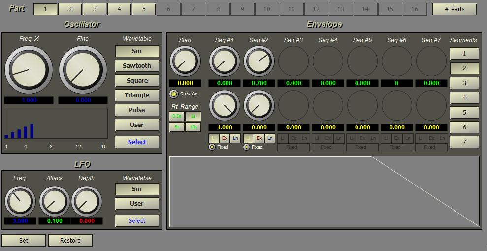

The AddSynth instrument adds the output of up to 16 tone generators. Each generator combines a wavetable oscillator and variable-segment envelope generator. A single LFO generator is shared by all oscillators.
To create an AddSynth instrument, right-click on Instruments in the project tree and select New. Enter a neame for the instrument and select the AddSynth type in the list box at the bottom of the instrument properties form.

The additive synthesis instrument editor is shown below.
Although the instrument can support maximum of 126 partials and sixteen envelope segments, the editor for the AddSynth instrument allows a maximum of sixteen partials and a maximum of seven segments for an envelope. Only one oscillator and envelope generator pair is displayed at a time. The buttons across the top of the editor allow selection of the partial. To increase or decrease the number of available partials, click the "# Parts" button and enter the number of partials. To change the number of segments in the envelope, select one of the buttons under the "Segments" label.
The waveform, frequency, and overall volume for each oscillator may be set individually. When waveforms are set to sine waves, this instrument implements a Fourier series and can be used to re-synthesize sounds from an analyzed sound. It is also possible to use complex waveforms and "morph" between the waveforms over time, implementing a wavetable synthesis system.
The envelope generators are variable multi-segment types allowing up to seven segments with or without sustain. Each segment is defined by a rate, ending level and curve type.
Because the number of tone generators varies, parameter ID numbers must be calculated based on the partial and envelope segment. The parameter ID numbers are formed as a set of bit fields:
[PN(7)][SN(4)][VAL(4)] PN = (partial + 1) * 256 SN = segment * 16
This allows for 126 partials, 16 envelope segments per partial, and 16 parameter values for each partial or envelope. A value of 0 for PN indicates a parameter index used to specify parameters that affect the entire instrument (e.g., fundamental pitch, master volume, LFO).
The following table shows the parameter numbers and the equivalent XML tag and attribute values for the AddSynth instrument. ID names of the form pn represent the letter 'p' followed by an integer and refer to a zero-based part number. ID names of the form pnsn refer to envelope segment numbers. For example, to set the frequency for part 3, use p3.frq and use p0s2.rt to set the rate for segment 2 of the envelope for part 0. The letter 'p' can be extened to 'part' or even 'partial' if desired since the code only looks at the first letter and then skips all letters up to the next digit.
Parameter |
Tag |
Attribute |
Name |
Use |
16 |
lfo |
frq |
lfofrq |
LFO Frequency |
17 |
|
wt |
lfowt |
LFO wave table |
18 |
|
atk |
lfoatk |
LFO envelope attack time |
19 |
|
amp |
lfpamp |
LFO amplitutde (depth) |
|
part |
pn |
pn |
Partial number |
PN+0 |
|
mul |
pn.mul |
Frequency multiplier. The frequency of this partial is the base frequency of the instrument multiplied by this value. |
PN+1 |
|
frq |
pn.frq |
Oscillator frequency. This is optional since the frequency will be recalculated based on the multiplier. If the multiplier is 0, this frequency will be used instead. |
PN+2 |
|
wt |
pn.wt |
Wave table index |
PN+9 |
env |
segs |
* |
Number of envelope segments. |
PN+3 |
|
st |
pn.st |
Starting envelope value |
PN+4 |
|
sus |
pn.sus |
Sustain-on flag, 1 or 0. |
|
seg |
sn |
pnsn |
Segment number |
PN+SN+5 |
|
rt |
pnsn.rt |
Segment rate |
PN+SN+6 |
|
lvl |
pnsn.lvl |
Segment end level |
PN+SN+7 |
|
ty |
pnsn.ty |
Segment curve type: |
PN+SN+8 |
|
ty |
pnsn.fix |
Segment rate type: |
* The number of envelope segments must be set from the project file or the editor.
<instr id="" type="AddSynth" name="" parts="" >
<part pn="" mul="" frq="" wt="" />
<env segs="" st="" sus="">
<seg sn="" rt="" lvl="" ty="" />
</env>
</part>
<lfo frq="" wt="" atk="" amp="" />
</instr>